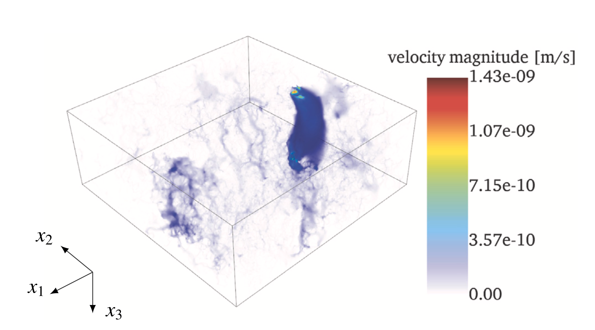
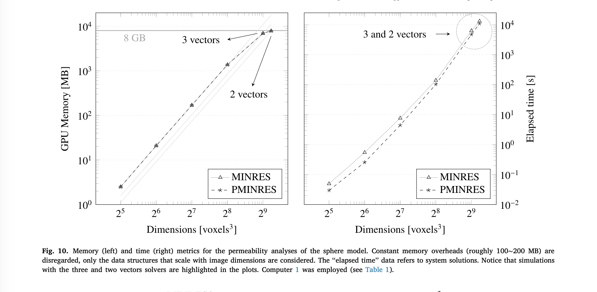
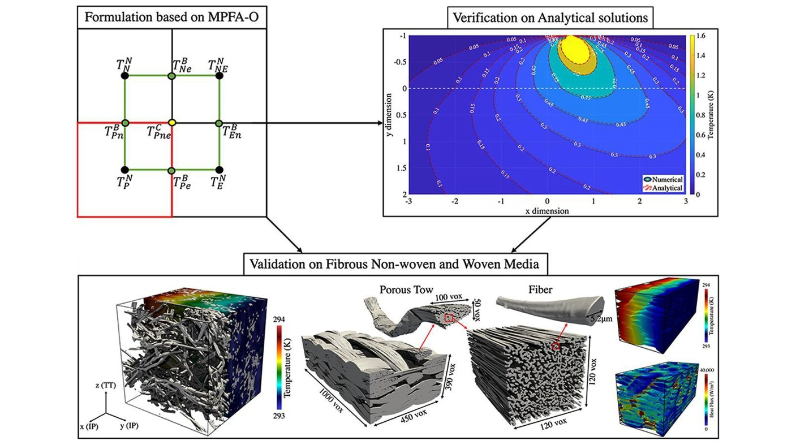
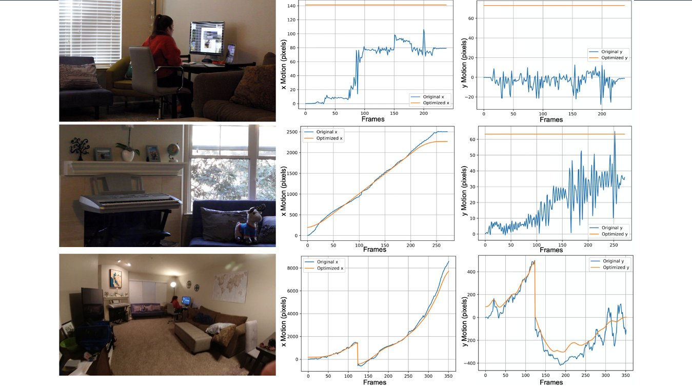

- Hello and welcome to my portfolio!
- I am a CV/ML Engineer within Apple's Video Computer Vision Group, specializing in graphics, rendering, and 3D generative modeling.
- Prior to this role, I worked as a Research Scientist at NASA Ames for seven years, where I co-led the development of PuMA, the 2022 NASA Software of the Year. My research primarily focused on the segmentation and analysis of CT data to predict material properties for heatshields.
- My past experiences include internships at various companies such as Airbus, Earth-i, and Planet Labs, which helped me shape my passion for computer vision. My projects spanned from analyzing aircraft movements, to processing satellite imagery to gather insights, to natural scene generation. I am well-versed in several coding languages, especially Python, and I am currently extending my knowledge of PyTorch while implementing the latest deep learning techniques.
- Academically, I completed a Master in Computer Science with a specialization in Computational Perception from the Georgia Institute of Technology in August 2023. I graduated from Imperial College London in June 2018 with a Master in Aerospace Engineering. My education started with a scientific highschool diploma from Liceo Sant'Alessandro, Bergamo (Italy).
- In my (*sigh* limited) free time, you can find me on a soccer field, tennis court, or hiking somewhere in the Bay Area.
- Whether it's to discuss new ideas, opportunities, or even just chat over a cup of coffee, please don't hesitate to reach out!
Career Journey
Projects
Research
DSplats: 3D Generation by Denoising Splats-Based Multiview Diffusion Models
Analysis and simulation of time-resolved X-ray microtomography revealing oxidation-induced degradation in carbon fiber heat shields, impacting material properties and aerospace design.

Carbon Fiber Oxidation in 4D
Analysis and simulation of time-resolved X-ray microtomography revealing oxidation-induced degradation in carbon fiber heat shields, impacting material properties and aerospace design.


Enabling FEM-based absolute permeability estimation in giga-voxel porous media with a single GPU
Open-source lightweight GPU solvers for FEM simulation of Stokes flow in porous media.

arcjetCV: an open-source software to analyze material ablation
A python package to automate time-resolved measurements of heatshield material recession from arcjet videos via edge detection and tracking.
TomoSAM: Slicer's extension for 3D segmentation
An extension of Slicer using the Segment Anything Model (SAM) to aid the segmentation of 3D data from tomography or other imaging techniques.
Simulation toolkit for digital material characterization of large image-based microstructures
An image-based simulation CUDA toolkit for material characterization using Finite Element numerical methods to compute the
effective thermal conductivity, elasticity, and permeability.
Porous Microstructure Analysis (PuMA)
PuMA was developed to compute effective material properties and perform material
response simulations on 3D microstrutural images obtained from X-ray tomography.
Multi-Scale Analysis of Effective Mechanical Properties of Porous 3D Woven Composite Materials
Computation and analysis of the mechanical properties of 3D woven composite materials that share the
same yarn structure but differ in their matrix porosity and yarn's fiber volume fraction.

Anisotropic analysis of fibrous and woven materials part 2: Computation of effective conductivity
Numerical finite volume method to compute the effective thermal conductivity of 3D microstructures obtained from tomograhy,
accounting for the anisotropy of the constituent phases.
Anisotropic analysis of fibrous and woven materials part 1: Estimation of local orientation
Three techniques to estimate the local orientation of fibrous microstructures obtained from tomography scanning:
a common image processing technique called structure tensor, a method based on artificial flux, and a novel ray-casting approach
University
NeRF applied to satellite imagery for surface reconstruction
Surf-NeRF, a method to synthesize novel views from a sparse set of satellite images of a scene
as well as its surface elevation, while accounting for the variation in lighting present in the pictures.
Stereo Correspondence using Graph-Cuts
Two techniques to perform stereo correspondence: a simple method based on SSD
and a graph cut algorithm. The performance of both method was benchmarked
against the Middlebury image database of rectified stereo image pairs.

Video Stabilization using L1 optimal camera paths
An automatic video stabilizer relying on the estimation of the original camera path through the
detection of features between video frames and the computation of the similarity transformation between them.
Internships

blender2dirsig
Automated the creation of 3D synthetic scenes during the summer internship at Planet Labs (2022)
for the DIRSIG image generation model using Blender scripting.
Copper Tracker
Developed algorithms during the summer internship at Earth-i (2017) to correlate copper ore
extraction data with features observable from space, tracked using Convolutional Neural Networks.
LiMA Flight Tracker
Developed app using R during the year-long internship in the Data Science department at Airbus UK (2015-2016).
The objective was to analyze aircraft movements through FlightRadar24 and predict maintenance stops.
Personal

ESA NEMESYS Bexus
Designed the structure of a student experiment (NEMESYS Bexus) flown on a stratospheric balloon by the European Space Agency
to study the effect of particle impacts on memory boards.
Water Brigade - Ghana 2014
Joined a brigade organized by Imperial College London traveling to a village in Ghana with no access to potable water,
with the aim of designing and implementing water systems to prevent water-related illnesses.